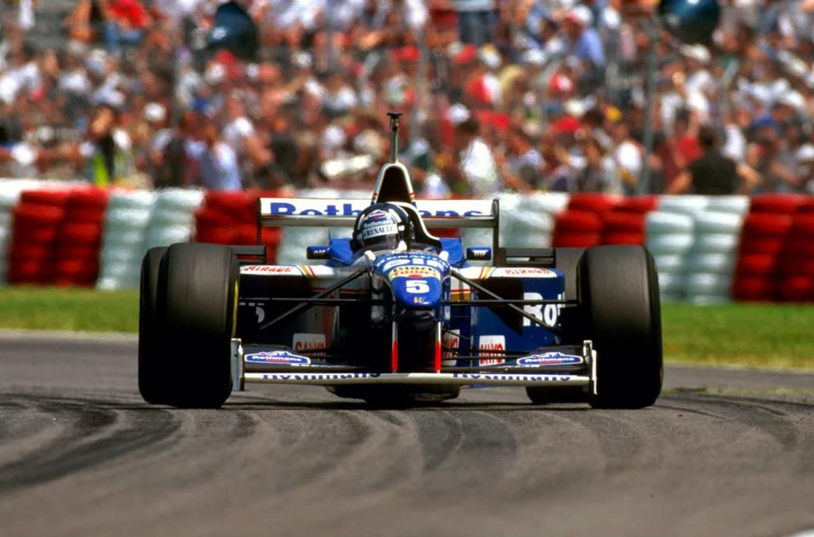
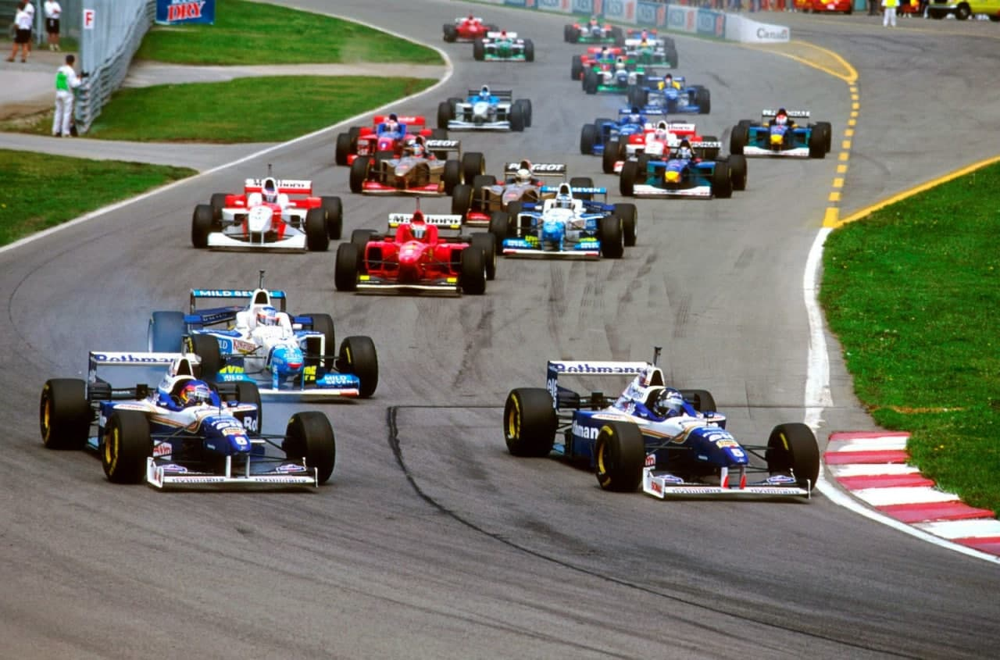
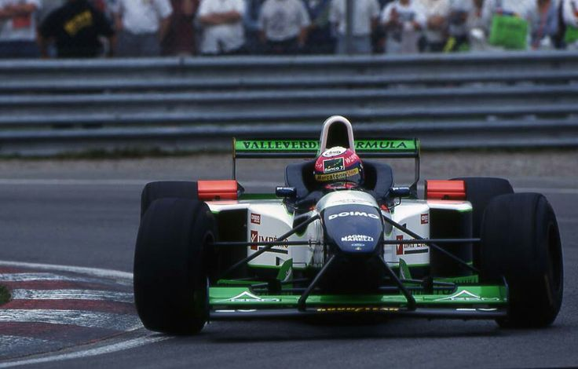
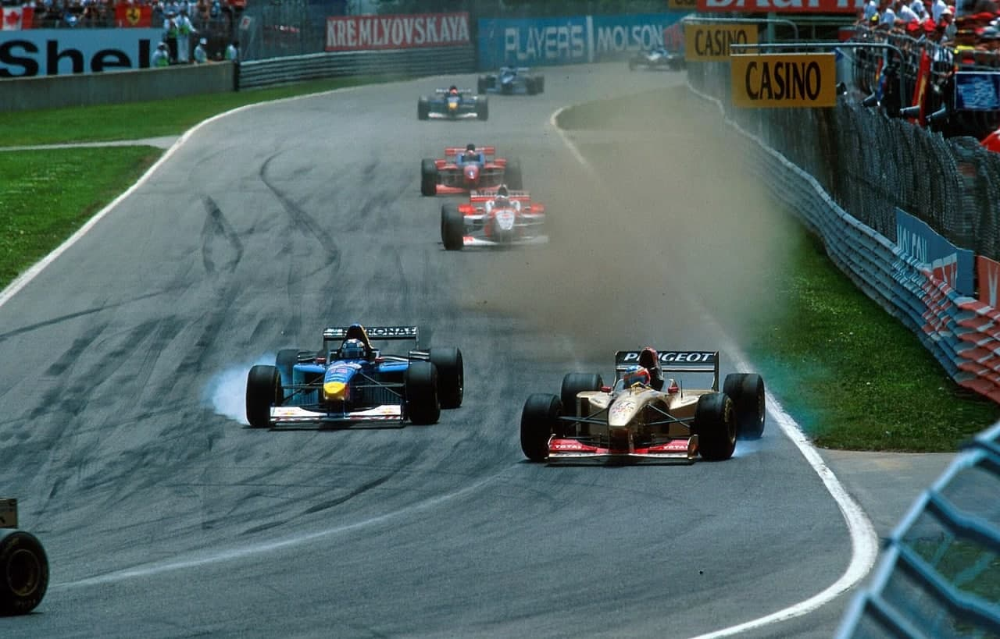
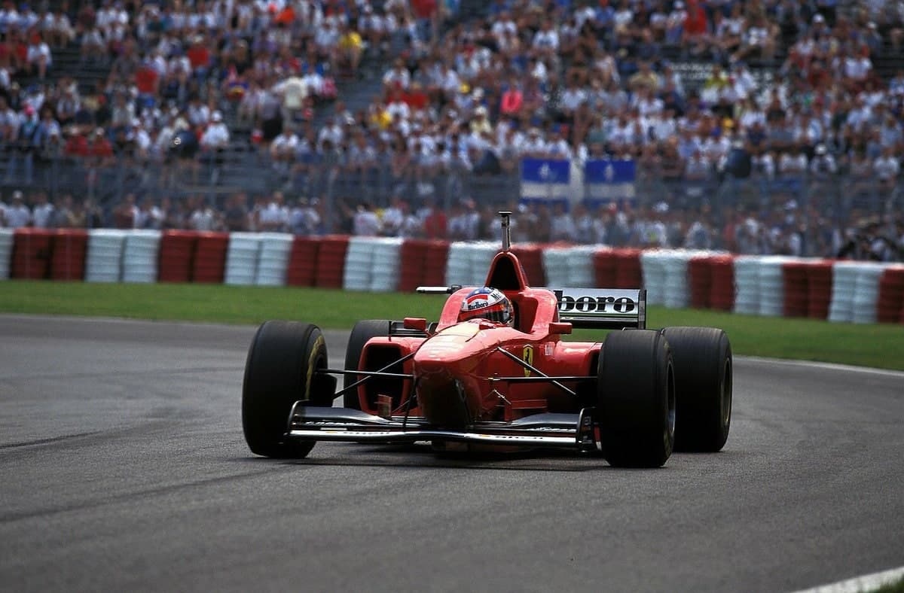
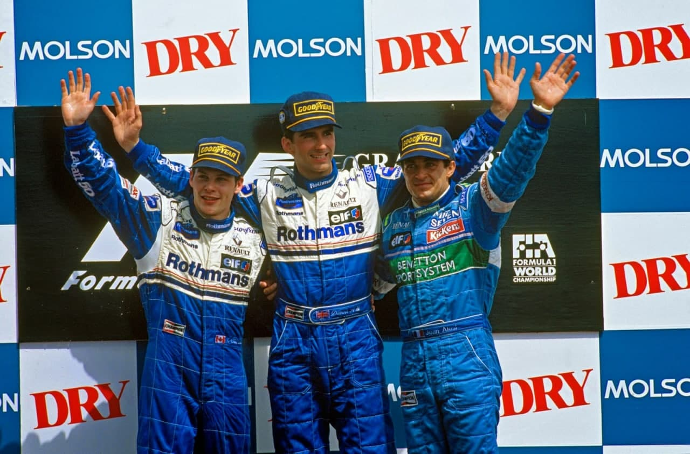

HILL VENCE HERÓI LOCAL

Hill vence pela 5ª vez no ano e abre 21 pontos na liderança. Villeneuve é 2º. Ambas Ferrari e os três brasileiros abandonam. As duas McLaren pontuam. Jordan andam bem como de costume, e Brundle é sexto. Grande clima de festa da estréia de Villeneuve no circuito com o nome de seu pai.
por Francisco Santos
Para quem passa seis meses do ano com temperaturas cerca de 30° negativos, o Grande Prêmio disputado com calor e um sol maravilhoso na bela Ille de Notre Dame, no Rio São Lourenço, é um alívio e motivo para viver momentos de lazer. Ainda por cima quando o novo herói local, o herdeiro do saudoso pequeno grande Gilles, se estréia na F1 em seu circuito caseiro. Ao longo da semana, Montreal viveu uma grande festa, com toda a cidade engalanada de cartazes evocando Jacques e a Williams. Muitos esperavam uma vitória do herdeiro, que nos treinos livres fez o melhor tempo e liderou a qualificação até dois minutos do final. No entanto, Hill, depois de abandonar os dois GP anteriores, não deu chances e impôs-se ao jovem colega. Mesmo assim, Villeneuve esteve muito bem, lutando até final com uma performance entusiasmante, terminando com a melhor volta. Mas, no final, a grande festa foi de Damon Hill. Depois de dois abandonos frustrantes e preocupantes, esta sua quinta vitória do ano aumentou sua vantagem no campeonato para 21 pontos sobre Villeneuve e o rival Schumacher não pontuou. Esta terá sido sua grande festa. Tudo deu certo para o inglês. No ano anterior todos haviam feito apenas um reabastecimento, mas este ano, com a opção de um pneus Goodyear mais macio, Hill decidiu parar duas vezes, enquanto Villeneuve optava por uma parada. Sua aposta deu certo, tanto mais que a única hipótese para o cana-dense não deu certo pois, embora tivesse largado muito bem, o inglês cortou-lhe a trajetória para a primeira curva. Era primordial para Villeneuve fazer as primeiras voltas à frente de Hill para não o deixar ganhar a vantagem que a menor carga de gasolina lhe permitia.
À 1ª volta, Hill já se afastara 2s; à 42ª volta estava 3,3s na frente, e aumentava a vantagem volta a volta, não só porque seu carro estava mais leve, mas porque Villeneuve estava sendo demasiado cauteloso com os freios, receoso que sua tendência para os gastar com rapidez fosse fatal para o final. Mesmo assim, quando Hill reabasteceu a 12 vez, Villeneuve estava a 11s dele. Ficou 7,5s na frente. No entanto, apesar de ter mais gasolina, Hill diminui o atraso para apenas 6,4s quando Villeneuve reabasteceu. Isto foi fatal para o canadense. O erro de andamento inicial, o reabastecimento 3s mais lento que Hill e dois atrasos na fase final da corrida foram mais fatais ainda: uma perda de 5s quando passou Herbert, viu que havia bandeira amarela e abrandou deixando-se passar de novo pelo inglês para não ser punido com um stop & and go, e outra perda de 3s quando Badoer parou. Villeneuve ainda tentou, fazendo várias vezes a volta mais rápida e aproximando-se a 8s de Hill, mas não havia nada a fazer, já que Hill voltara á pista depois de seu 22 reabastecimento com 11,7s na frente e continuava brigando, com grande consistência de ritmo de voltas em redor de 1m22s. De notar que a terceira melhor volta da corrida – Alesi – ficou a 0,85s de Hill.

Vergonha da Ferrari
Depois da espantosa vitória de Barcelona, a “Rossa” vinha com novas esperanças para aqui, tanto mais que a pista tinha menos uma chicane, que lhe era desfavorável. Além disso, o novo bico alto melhorava a performance. As esperanças pareciam fundadas: Schumacher brigou pela pole. No entanto, tudo foi logo por água abaixo na volta de apresentação quando o motor V10 se recusou a trabalhar, obrigando o alemão a largar da última fila. Pior, o bicampeão, que ao final da 12 volta já era 172, pouco conseguiu recuperar pois o comando de repartimento de frenagem no cockpit havia quebrado e o equilíbrio de frenagem estava terrível, não conseguindo ir embora de Diniz (passou-o à 42 volta, mas manteve-se sempre 3,5s na frente do brasileiro). Quando reabasteceu estava em 72, mas abusou da aceleração na saída do box e o semi-eixo esquerdo não aguentou, quebrando e soltando-se ridiculamente à saída do box, sendo apanhado por um mecânico da Forti!… Irvine teve a suspensão traseira que-brada logo à 22 volta! Alesi andou sempre em terceiro, sendo pressionado por Berger durante algum tempo até o austríaco desistir de o passar e depois rodar e abandonar. Brundle, que sempre anda bem aqui, poderia ter feito um brilharete e terminado em quarto, mas sua batida em Lamy baixou-o para sexto. Os dois McLaren terminaram em quarto e quinto, com Coulthard 17s na frente de Hakkinen que havia rodado a passar Fisichella.
OS TREINOS
Com todo o mundo torcendo por ele, o circuito cheio de faixas “Fonte, fonte Jacques”, Villeneuve fez de tudo para conseguir a pole. Depois de vinte minutos de espera por parte de todos os ponteiros, foi ele o primeiro a marcar o ritmo, com 1m21,196s, que nem Hill conseguiu ao final de 4 voltas, ficando apenas em quarto, nem Schumacher, atrapalhado por Brundle. A sete minutos do final, Schumacher fica a 0,002s de Villeneuve. Dois minutos depois, Hill tenta, mas não consegue bater seu colega, que na volta seguinte baixa seu tempo para 1m21,079s. Hill regressa a 2 minutos do fim e, num derradeiro esforço, fez a pole, batendo Villeneuve por apenas 0,02s.
Sessão encurtada pela batida de Berger
Villeneuve ainda tentou recuperar a pole, com uma última volta com o mínimo de gasolina, mas a sessão foi parada a 50s do final, com o acidente de Berger a fazer a ambulância entrar na pista. Foi uma batida igual à que Alesi teve no mesmo local, a 17 minutos do final, com falha nos freios, roubando-lhe qualquer possibilidade de lutar pelos três melhores tempos.
Oito no mesmo segundo
Depois dos dez melhores terem estado dentro do mesmo segundo, o grid ficou com as quatro primeiras filas no mesmo segundo 21.
Hakkinen afastou o fantasma das três últimas provas desapontadoras, em que tinha testado algumas novas soluções, e fez o sexto tempo, sua melhor qualificação desde a Austrália.
Todos qualificados, algumas desilusões
Apesar de Montermini ter quebrado um motor logo no início da qualificação, conseguiu qualificar-se fazendo menos 0,624s que os 107%.
Desilusões para Barrichello, a Ligier e Sauber, apesar de usaram novas versões dos Mugen e Ford. O brasileiro esperava mais, neste circuito onde os Jordan sempre andaram bem e são muito velozes. Os franceses não regularam bem o chassis e os pilotos da Sauber não notaram qualquer melhoria no novo motor que elevou seu regime máximo a 16.500rpm.

A CORRIDA
A supremacia dos dois pilotos da Williams jamais esteve em dúvida durante todo o fim-de-semana. Em todas as sessões de treinos os dois melhores tempos foram deles. No warm-up não só aconteceu o mesmo, como o 132 tempo de Schumacher foi intrigante, e os 32 e 42 tempos dos Jordan confirmaram sua apetência para andar bem aqui. O que não se podia prever era que tudo ficaria resolvido entre a largada e a primeira curva. Primeiro, o V10 Ferrari de Schumi recusou-se a partir para a volta de apresentação, e, depois do motor pegar teve de largar em último. Estava afastada a única hipótese de ameaça ao domínio Williams. Seria uma questão caseira, entre Hill e o herói da casa. Hill, com duas paradas, teria de ir para a frente para ganhar tempo. Não poderia desperdiçar tempo atrás do mais pesado Villeneuve. No entanto, o canadense é sempre mais rápido nas largadas. Foi o aconteceu de novo, mas desta vez Hill encostou no seu companheiro, não o deixando tomar o comando antes da primeira curva, puxando para a direita e depois bloqueando qualquer tentativa de ultrapassagem de seu colega. E, aí a corrida ficou decidida. Bastaria não cometer erros, na pista ou nos boxes, para Hill ganhar. Por isso, o resto da prova foi bastante monótona.

Brundle joga fora 4º lugar e Lamy
Circularam muitos boatos de que Brundle — ainda sem se acertar bem na Jordan — iria sair da equipe. Este circuito, onde as Jordan sempre andam bem, seria excelente oportunidade para ele conseguir se afirmar, depois de ter feito seu primeiro longo teste, em Silverstone. Tudo começou bem, com Barrichello fazendo uma largada ruim (onde terá comprometido sua embreagem). Brundle andou por isso sempre na frente de seu colega. Chegou a 62, passou Hakkinen para 5º e, com uma estratégia de dois reabastecimentos, parecia ter pelo menos o 52 garantido com o abandono de Berger. Mas, jogou tudo fora quando abalroou desnecessariamente Lamy, numa tentativa de ultrapassagem suicida, já que a prioridade da primeira curva era do português que não tinha por que ceder a curva pois já estava dentro dela. Não é a primeira vez que Brundle faz destas. O mesmo aconteceu entre Katayama e Rosset.
Elevado índice de abandonos
Mesmo sem a chuva de Barcelona e de Mônaco, houve muitos abandonos. Apenas se classificaram oito carros de seis das onze equipes. Ou seja, houve cinco equipes que não tiveram um carro à chegada.

O BICO ALTO DA FERRARI
O prestígio e a força política de Schumacher na Ferrari – ainda por cima depois da vitória em Barcelona – permite-lhe até discordar de John Barnard e levar a melhor em divergências de opiniões técnicas. Programado para mais tarde, o novo pacote aerodinâmico do F310 foi testado em Imola na semana anterior a Montreal. 0 novo bico alto deu um ganho de apenas 0,2s, o que terá dado razão a Barnard, que não queria usá-lo por enquanto, já que seu chassis é o único com pontões laterais separados do chassis. Esta configuração não proporciona os mesmos ganhos aerodinâmicos que um bico alto oferece com um modelo tradicional como o Williams ou o Benetton. No entanto, Schumi optou por esta solução. Este novo bico (Pelicano ou Tubarão relaxado, segundo outros) é uma solução de compromisso. É muito alto e parecido com o Minardi 196 pelo apoio em V. Uma das principais alterações em relação ao bico baixo: os flaps posteriores são inteiriços, a toda a largura do aerofólio, enquanto no anterior eram divididos a meio. Willem Toet, o engenheiro francês responsável pela aerodinâmica em Maranello explica: “a funciona isolado em um carro de Fl, e a nova frente implica num ajuste completamente diferente do chassis”. Bernard está desenhando uma nova suspensão traseira como a do FW18, com triângulo inferior acima do painel do difusor que está sendo desenhado em Maranello, bem como alterações aos pontões laterais. Ambos os pilotos acharam o carro mais “confortável” de guiar, uma maior vantagem para Irvine do que para Schumi, que “não tinha problemas de conforto com o comportamento do carro”. Barnard vai concentrar-se no projeto do carro para 1997, enquanto a equipe de Maranello desenvolverá o F310. As primeiras Ferrari de bico alto foram a 412T1, de 1994, e a 412T2, de 1995, ambas projetadas por Barnard.
